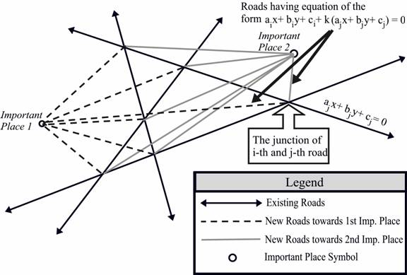

Problem A
Changing Roadmap
Input: Standard Input
Output: Standard Output
Like many
other cities
a) The city authority has identified PP very important places. These places can be considered as points in a two dimensional Cartesian coordinate system. New roads will be built from all the existing junctions (where two roads intersect) to all the important places. So JJ*PP new roads will be built, where JJ is the number of junctions. So all these new roads will be straight-line segments, each of them connecting one junction and one very important place.
b) Suppose the equation of the i-th and j-th road (j>i) is aix+biy+ci=0 and ajx+bjy+cj=0. Then the roads connecting the junction of these two roads and any important place will be of the form aix+biy+ci+k(ajx+bjy+cj)=0. If k is positive, then the road is built by Positive Builders Ltd, and if k is negative then the road is built by Negative Builders Ltd.
|  |
|
Figure: A
typical roadmap with four roads, two important places and six junctions. So
the number of new roads to be built is 2*6=12 |
Given the
equation of N existing roads of
The input file contains at most 12 sets of inputs. The description of each set is given below:
Each set starts with an integer N
(0<N<=3000), which denotes the number of existing roads in
Input is
terminated by a block whose first line contains a zero.
For each set of input produce two lines of output. The first line contains the serial of the roadmap and the second line reports how many of new roads, will be built by the Negative Builders Ltd. Look at the output for sample input for the exact format.
5-3954 -4700 56777190 -5953 3085-3903 -2020 -7990-4618 618 -44214162 3918 824833 7-5 7-5 -867697 3593 -48743311 2882 -59832871 1429 -68589436 -8954 -46569294 6173 5035-3924 1911 373335 -81 -104 -70 |
Roadmap 1: Negative Builders Ltd.
will build 16 New Roads. Roadmap 2: Negative Builders Ltd.
will build 23 New Roads. |
Problem setter: Shahriar Manzoor, EPS
Special Thanks: Derek Kisman, EPS